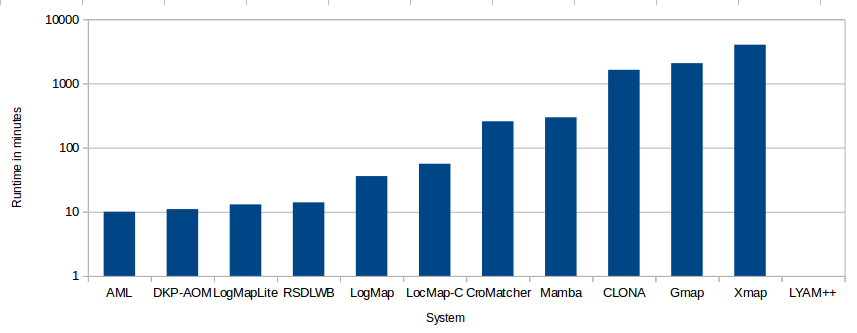

In this page one can find the results of the OAEI 2015 campaign for the MultiFarm track. The details on this data set can be found at MultiFarm data set. If you notice any kind of error (wrong numbers, incorrect information on a matching system, etc.) do not hesitate to contact us (for the mail see below in the last paragraph on this page).
Since 2014, part of the data set is used for a kind of blind evaluation. This subset includes all matching tasks involving the edas and ekaw ontologies (resulting in 55x24 matching tasks -- including Arabic and Italian translations), which were not used in previous campaigns. We refer to this blind evaluation as edas and ekaw based evaluation in the following. Participants were able to test their systems on the available subset of matching tasks (open evaluation), available via the SEALS repository. The open subset counts on 45x25 tasks (does not include Italian translations).
We can distinguish two types of matching tasks : (i) those tasks where two different ontologies (cmt-confOf, for instance) have been translated into two different languages; and (ii) those tasks where the same ontology (cmt-cmt) has been translated into two different languages. For the tasks of type (ii), good results are not directly related to the use of specific techniques for dealing with cross-lingual ontologies, but on the ability to exploit the fact that both ontologies have an identical structure.
This year, 5 systems implement cross-lingual matching strategies: AML, CLONA, LogMap, LYAM++ and XMap. This number increased with respect to the last campaign (3 in 2014, 7 in 2013, and 7 in 2012). Most of them integrate a translation module in their implementations (AML, CLONA, LogMap and XMap) and one of them applies an alternative strategy by making use of the multilingual resource BabelNet (LYAM++).
The systems have been executed on a Debian Linux VM configured with four processors and 20GB of RAM running under a Dell PowerEdge T610 with 2*Intel Xeon Quad Core 2.26GHz E5607 processors. All measurements are based on a single run. Some systems have been executed in a different setting (MAMBA due to the issues with Gurobi optimizer, LogMap due to network problems when accessing the translator servers, and LYAM++ due to the issues with BabelNet license).
We can observe large differences between the time required for a system to complete the 45x25 matching tasks. However, we have experimented some problems when accessing the SEALS test repositories due to the many accesses to the server (i.e., tracks running their evaluations in parallel). Hence, the reported runtime may not reflect the real execution runtime required for completing the tasks.

The table below presents the aggregated results for the open subset, for the test cases of type (i) and (ii). The results have been computed using the Alignment API 4.6. We do not apply any threshold on the confidence measure. We observe significant differences between the results obtained for each type of matching task, specially in terms of precision, for most systems, with lower differences in terms of recall. As expected, in terms of F-measure, the systems implementing cross-lingual techniques outperform the non-cross-lingual systems for test cases of type (i). For these cases, non-specific matchers have good precision but generating very few correspondences. While LogMap has the best precision (at the expense of recall), AML has similar results in terms of precision and recall and outperforms the other systems in terms of F-measure (what is the case for both types of tasks). For type (ii), CroMatcher takes advantage of the ontology structure and performs better than some specific cross-lingual systems. The reader can refer to the OAEI paper for a more detailed discussion on these results.
| Different ontologies (i) | Same ontologies (ii) | |||||||||||||||||||||||||||||||||||
|---|---|---|---|---|---|---|---|---|---|---|---|---|---|---|---|---|---|---|---|---|---|---|---|---|---|---|---|---|---|---|---|---|---|---|---|---|
| System | Time | #pairs | Size | Prec. | F-m. | Rec. | Size | Prec. | F-m. | Rec. | ||||||||||||||||||||||||||
| AML | 10 | 45 | 11.58 | .53(.53) | .51(.51) | .50(.50) | 58.29 | .93(.93) | .64(.64) | .50(.50) | ||||||||||||||||||||||||||
| CLONA | 1629 | 45 | 9.45 | .46(.46) | .39(.39) | .35(.35) | 50.89 | .91(.91) | .58(.58) | .42(.42) | ||||||||||||||||||||||||||
| LogMap* | 36 | 45 | 6.37 | .75(.75) | .41(.41) | .29(.29) | 42.83 | .95(.95) | .45(.45) | .30(.30) | ||||||||||||||||||||||||||
| LYAM++* | - | 13 | 12.29 | .14(.50) | .14(.49) | .14(.44) | 64.20 | .26(.90) | .19(.66) | .15(.53) | ||||||||||||||||||||||||||
| XMap | 4012 | 45 | 36.39 | .22(.23) | .24(.25) | .27(.28) | 61.65 | .66(.69) | .37(.39) | .27(.29) | ||||||||||||||||||||||||||
| CroMatcher | 257 | 45 | 10.72 | .30(.30) | .07(.07) | .04(.04) | 66.02 | .78(.78) | .55(.55) | .45(.45) | ||||||||||||||||||||||||||
| DKP-AOM | 11 | 19 | 2.53 | .39(.92) | .03(.08) | .01(.04) | 4.23 | .50(.99) | .01(.02) | .01(.01) | ||||||||||||||||||||||||||
| GMap | 2069 | 21 | 1.69 | .37(.80) | .03(.06) | .01(.03) | 3.13 | .67(.98) | .01(.02) | .01(.01) | ||||||||||||||||||||||||||
| LogMap-C | 56 | 19 | 1.41 | .38(.90) | .03(.09) | .02(.04) | 3.68 | .35(.56) | .01(.03) | .01(.01) | ||||||||||||||||||||||||||
| LogMapLite | 13 | 19 | 1.29 | .39(.91) | .04(.08) | .02(.04) | 3.70 | .32(.57) | .01(.03) | .01(.01) | ||||||||||||||||||||||||||
| Mamba* | 297 | 21 | 1.52 | .36(.78) | .06(.13) | .03(.07) | 3.68 | .48.(99) | .02(.05) | .01(.03) | ||||||||||||||||||||||||||
| RSDLWB | 14 | 45 | 30.71 | .01(.01) | .01(.01) | .01(.01) | 43.71 | .20(.20) | .11(.11) | .08(.08) | ||||||||||||||||||||||||||
| Cross-lingual systems | Non-specific systems | |||||||||||||||||||||||||||||||||||
|---|---|---|---|---|---|---|---|---|---|---|---|---|---|---|---|---|---|---|---|---|---|---|---|---|---|---|---|---|---|---|---|---|---|---|---|---|
| AML | CLONA | LogMap | LYAM++ | XMap | CroMatcher | DKP-AOM | GMap | LogMap-C | LogMap-Lite | Mamba | RSDLWB | |||||||||||||||||||||||||
| ar-cn | 0.46 | 0.33 | 0.26 | 0.44 | 0.29 | 0.22 | 0.75 | 0.25 | 0.15 | NaN | NaN | 0.00 | 0.15 | 0.17 | 0.18 | 0.02 | 0.02 | 0.03 | NaN | NaN | 0.00 | NaN | NaN | 0.00 | NaN | NaN | 0.00 | NaN | NaN | 0.00 | NaN | NaN | 0.00 | 0.00 | 0.00 | 0.01 |
| ar-cz | 0.51 | 0.50 | 0.49 | 0.47 | 0.36 | 0.29 | 0.82 | 0.44 | 0.30 | NaN | NaN | 0.00 | 0.25 | 0.27 | 0.29 | 0.02 | 0.03 | 0.03 | NaN | NaN | 0.00 | NaN | NaN | 0.00 | NaN | NaN | 0.00 | NaN | NaN | 0.00 | NaN | NaN | 0.00 | 0.00 | 0.01 | 0.01 |
| ar-de | 0.32 | 0.30 | 0.29 | 0.29 | 0.22 | 0.18 | 0.46 | 0.21 | 0.14 | NaN | NaN | 0.00 | 0.14 | 0.15 | 0.15 | 0.02 | 0.02 | 0.03 | NaN | NaN | 0.00 | NaN | NaN | 0.00 | NaN | NaN | 0.00 | NaN | NaN | 0.00 | NaN | NaN | 0.00 | 0.00 | 0.00 | 0.01 |
| ar-en | 0.56 | 0.56 | 0.56 | 0.44 | 0.33 | 0.27 | 0.77 | 0.44 | 0.31 | NaN | NaN | 0.00 | 0.21 | 0.24 | 0.28 | 0.02 | 0.02 | 0.03 | NaN | NaN | 0.00 | NaN | NaN | 0.00 | NaN | NaN | 0.00 | NaN | NaN | 0.00 | NaN | NaN | 0.00 | 0.00 | 0.01 | 0.01 |
| ar-es | 0.45 | 0.46 | 0.48 | 0.45 | 0.37 | 0.32 | 0.74 | 0.43 | 0.30 | NaN | NaN | 0.00 | 0.28 | 0.29 | 0.30 | 0.02 | 0.02 | 0.03 | NaN | NaN | 0.00 | NaN | NaN | 0.00 | NaN | NaN | 0.00 | NaN | NaN | 0.00 | NaN | NaN | 0.00 | 0.01 | 0.01 | 0.02 |
| ar-fr | 0.12 | 0.12 | 0.11 | 0.14 | 0.12 | 0.10 | 0.18 | 0.09 | 0.06 | NaN | NaN | 0.00 | 0.04 | 0.05 | 0.05 | 0.00 | 0.00 | 0.00 | NaN | NaN | 0.00 | NaN | NaN | 0.00 | NaN | NaN | 0.00 | NaN | NaN | 0.00 | NaN | NaN | 0.00 | 0.00 | NaN | 0.00 |
| ar-nl | 0.47 | 0.45 | 0.43 | 0.36 | 0.26 | 0.20 | 0.81 | 0.43 | 0.30 | NaN | NaN | 0.00 | 0.22 | 0.24 | 0.26 | 0.02 | 0.03 | 0.03 | NaN | NaN | 0.00 | NaN | NaN | 0.00 | NaN | NaN | 0.00 | NaN | NaN | 0.00 | NaN | NaN | 0.00 | 0.00 | 0.00 | 0.01 |
| ar-pt | 0.50 | 0.50 | 0.49 | 0.48 | 0.38 | 0.31 | 0.84 | 0.45 | 0.31 | NaN | NaN | 0.00 | 0.29 | 0.28 | 0.28 | 0.02 | 0.02 | 0.03 | NaN | NaN | 0.00 | NaN | NaN | 0.00 | NaN | NaN | 0.00 | NaN | NaN | 0.00 | NaN | NaN | 0.00 | 0.01 | 0.01 | 0.02 |
| ar-ru | 0.48 | 0.44 | 0.41 | 0.44 | 0.33 | 0.26 | 0.79 | 0.46 | 0.32 | NaN | NaN | 0.00 | 0.18 | 0.20 | 0.23 | 0.02 | 0.03 | 0.03 | NaN | NaN | 0.00 | NaN | NaN | 0.00 | NaN | NaN | 0.00 | NaN | NaN | 0.00 | NaN | NaN | 0.00 | 0.00 | 0.00 | 0.00 |
| cn-cz | 0.58 | 0.45 | 0.36 | 0.48 | 0.36 | 0.28 | 0.86 | 0.39 | 0.26 | NaN | NaN | 0.00 | 0.28 | 0.29 | 0.29 | 0.02 | 0.02 | 0.03 | NaN | NaN | 0.00 | NaN | NaN | 0.00 | NaN | NaN | 0.00 | NaN | NaN | 0.00 | NaN | NaN | 0.00 | 0.00 | 0.01 | 0.01 |
| cn-de | 0.58 | 0.49 | 0.42 | 0.49 | 0.34 | 0.26 | 0.78 | 0.27 | 0.16 | NaN | NaN | 0.00 | 0.27 | 0.28 | 0.29 | 0.02 | 0.02 | 0.02 | NaN | NaN | 0.00 | NaN | NaN | 0.00 | NaN | NaN | 0.00 | NaN | NaN | 0.00 | NaN | NaN | 0.00 | 0.00 | 0.00 | 0.01 |
| cn-en | 0.60 | 0.55 | 0.50 | 0.39 | 0.29 | 0.23 | 0.89 | 0.29 | 0.17 | NaN | NaN | 0.00 | 0.25 | 0.27 | 0.30 | 0.02 | 0.02 | 0.03 | NaN | NaN | 0.00 | NaN | NaN | 0.00 | NaN | NaN | 0.00 | NaN | NaN | 0.00 | NaN | NaN | 0.00 | 0.01 | 0.02 | 0.03 |
| cn-es | 0.58 | 0.53 | 0.49 | 0.47 | 0.39 | 0.34 | 0.73 | 0.34 | 0.22 | NaN | NaN | 0.00 | 0.30 | 0.30 | 0.30 | 0.02 | 0.02 | 0.03 | NaN | NaN | 0.00 | NaN | NaN | 0.00 | NaN | NaN | 0.00 | NaN | NaN | 0.00 | NaN | NaN | 0.00 | 0.01 | 0.01 | 0.02 |
| cn-fr | 0.57 | 0.52 | 0.48 | 0.42 | 0.36 | 0.32 | 0.73 | 0.31 | 0.20 | NaN | NaN | 0.00 | 0.30 | 0.31 | 0.33 | 0.02 | 0.02 | 0.02 | NaN | NaN | 0.00 | NaN | NaN | 0.00 | NaN | NaN | 0.00 | NaN | NaN | 0.00 | NaN | NaN | 0.00 | 0.02 | 0.02 | 0.04 |
| cn-nl | 0.48 | 0.34 | 0.27 | 0.40 | 0.30 | 0.24 | 0.79 | 0.28 | 0.17 | NaN | NaN | 0.00 | 0.22 | 0.23 | 0.24 | 0.02 | 0.02 | 0.03 | NaN | NaN | 0.00 | NaN | NaN | 0.00 | NaN | NaN | 0.00 | NaN | NaN | 0.00 | NaN | NaN | 0.00 | 0.01 | 0.01 | 0.02 |
| cn-pt | 0.56 | 0.50 | 0.46 | 0.48 | 0.35 | 0.28 | 0.81 | 0.31 | 0.19 | NaN | NaN | 0.00 | 0.28 | 0.27 | 0.26 | 0.02 | 0.02 | 0.02 | NaN | NaN | 0.00 | NaN | NaN | 0.00 | NaN | NaN | 0.00 | NaN | NaN | 0.00 | NaN | NaN | 0.00 | 0.01 | 0.01 | 0.02 |
| cn-ru | 0.50 | 0.39 | 0.32 | 0.42 | 0.34 | 0.28 | 0.78 | 0.41 | 0.28 | NaN | NaN | 0.00 | 0.23 | 0.25 | 0.28 | 0.01 | 0.01 | 0.02 | NaN | NaN | 0.00 | NaN | NaN | 0.00 | NaN | NaN | 0.00 | NaN | NaN | 0.00 | NaN | NaN | 0.00 | 0.01 | 0.01 | 0.02 |
| cz-de | 0.55 | 0.52 | 0.49 | 0.50 | 0.42 | 0.37 | 0.82 | 0.55 | 0.41 | NaN | NaN | 0.00 | 0.39 | 0.42 | 0.45 | 0.46 | 0.11 | 0.07 | 0.85 | 0.08 | 0.04 | 1.00 | 0.04 | 0.02 | 0.85 | 0.08 | 0.04 | 0.85 | 0.08 | 0.04 | 1.00 | 0.11 | 0.06 | 0.00 | 0.00 | 0.01 |
| cz-en | 0.61 | 0.63 | 0.65 | 0.53 | 0.50 | 0.46 | 0.82 | 0.52 | 0.39 | NaN | NaN | 0.00 | 0.37 | 0.43 | 0.52 | 0.59 | 0.12 | 0.07 | 1.00 | 0.05 | 0.02 | 1.00 | 0.06 | 0.03 | 1.00 | 0.06 | 0.03 | 1.00 | 0.07 | 0.04 | 0.79 | 0.19 | 0.11 | 0.01 | 0.01 | 0.02 |
| cz-es | 0.58 | 0.61 | 0.65 | 0.52 | 0.51 | 0.50 | 0.74 | 0.50 | 0.38 | NaN | NaN | 0.00 | 0.48 | 0.52 | 0.59 | 0.40 | 0.10 | 0.06 | 1.00 | 0.12 | 0.07 | 1.00 | 0.06 | 0.03 | 1.00 | 0.12 | 0.07 | 1.00 | 0.12 | 0.07 | 1.00 | 0.16 | 0.09 | 0.00 | 0.01 | 0.01 |
| cz-fr | 0.57 | 0.57 | 0.57 | 0.46 | 0.42 | 0.39 | 0.77 | 0.49 | 0.36 | NaN | NaN | 0.00 | 0.41 | 0.45 | 0.50 | 0.18 | 0.02 | 0.01 | 1.00 | 0.02 | 0.01 | 1.00 | 0.02 | 0.01 | 1.00 | 0.02 | 0.01 | 1.00 | 0.02 | 0.01 | 0.75 | 0.09 | 0.05 | 0.01 | 0.01 | 0.02 |
| cz-nl | 0.60 | 0.60 | 0.60 | 0.48 | 0.44 | 0.40 | 0.77 | 0.52 | 0.39 | NaN | NaN | 0.00 | 0.39 | 0.43 | 0.49 | 0.82 | 0.11 | 0.06 | 1.00 | 0.04 | 0.02 | 0.56 | 0.07 | 0.04 | 1.00 | 0.04 | 0.02 | 1.00 | 0.06 | 0.03 | 0.61 | 0.10 | 0.06 | 0.00 | 0.01 | 0.01 |
| cz-pt | 0.57 | 0.59 | 0.62 | 0.49 | 0.47 | 0.46 | 0.80 | 0.54 | 0.41 | NaN | NaN | 0.00 | 0.46 | 0.50 | 0.54 | 0.80 | 0.20 | 0.11 | 1.00 | 0.14 | 0.07 | 1.00 | 0.11 | 0.06 | 1.00 | 0.14 | 0.07 | 1.00 | 0.14 | 0.08 | 1.00 | 0.18 | 0.10 | 0.01 | 0.02 | 0.03 |
| cz-ru | 0.63 | 0.62 | 0.62 | 0.53 | 0.49 | 0.45 | 0.81 | 0.53 | 0.39 | NaN | NaN | 0.00 | 0.39 | 0.45 | 0.52 | 0.02 | 0.02 | 0.02 | NaN | NaN | 0.00 | NaN | NaN | 0.00 | NaN | NaN | 0.00 | NaN | NaN | 0.00 | NaN | NaN | 0.00 | 0.01 | 0.02 | 0.03 |
| de-en | 0.53 | 0.54 | 0.55 | 0.43 | 0.38 | 0.35 | 0.79 | 0.50 | 0.36 | NaN | NaN | 0.00 | 0.37 | 0.41 | 0.46 | 0.62 | 0.23 | 0.14 | 1.00 | 0.22 | 0.12 | 1.00 | 0.04 | 0.02 | 1.00 | 0.18 | 0.10 | 1.00 | 0.22 | 0.12 | 0.91 | 0.22 | 0.13 | 0.01 | 0.01 | 0.02 |
| de-es | 0.51 | 0.52 | 0.52 | 0.51 | 0.45 | 0.40 | 0.79 | 0.48 | 0.34 | NaN | NaN | 0.00 | 0.46 | 0.45 | 0.45 | 0.61 | 0.16 | 0.09 | 1.00 | 0.06 | 0.03 | 1.00 | 0.03 | 0.02 | 1.00 | 0.11 | 0.06 | 1.00 | 0.06 | 0.03 | 0.92 | 0.17 | 0.09 | 0.01 | 0.01 | 0.02 |
| de-fr | 0.52 | 0.53 | 0.55 | 0.49 | 0.44 | 0.40 | 0.76 | 0.44 | 0.31 | NaN | NaN | 0.00 | 0.37 | 0.39 | 0.42 | 0.40 | 0.06 | 0.03 | 0.80 | 0.03 | 0.02 | 1.00 | 0.01 | 0.00 | 0.80 | 0.03 | 0.02 | 0.80 | 0.03 | 0.02 | 0.62 | 0.06 | 0.03 | 0.01 | 0.01 | 0.02 |
| de-nl | 0.54 | 0.50 | 0.46 | 0.48 | 0.40 | 0.35 | 0.80 | 0.44 | 0.30 | NaN | NaN | 0.00 | 0.32 | 0.33 | 0.35 | 0.83 | 0.17 | 0.10 | 0.86 | 0.05 | 0.02 | 0.67 | 0.03 | 0.02 | 0.86 | 0.05 | 0.02 | 0.86 | 0.05 | 0.02 | 0.91 | 0.21 | 0.12 | 0.01 | 0.01 | 0.01 |
| de-pt | 0.50 | 0.50 | 0.50 | 0.52 | 0.46 | 0.41 | 0.75 | 0.47 | 0.35 | NaN | NaN | 0.00 | 0.42 | 0.43 | 0.43 | 0.90 | 0.14 | 0.07 | 1.00 | 0.08 | 0.04 | 1.00 | 0.04 | 0.02 | 1.00 | 0.08 | 0.04 | 1.00 | 0.08 | 0.04 | 1.00 | 0.09 | 0.05 | 0.00 | 0.01 | 0.01 |
| de-ru | 0.56 | 0.51 | 0.47 | 0.50 | 0.42 | 0.36 | 0.79 | 0.46 | 0.33 | NaN | NaN | 0.00 | 0.36 | 0.39 | 0.42 | 0.01 | 0.02 | 0.02 | NaN | NaN | 0.00 | NaN | NaN | 0.00 | NaN | NaN | 0.00 | NaN | NaN | 0.00 | NaN | NaN | 0.00 | 0.00 | 0.00 | 0.01 |
| en-es | 0.56 | 0.59 | 0.62 | 0.49 | 0.46 | 0.44 | 0.81 | 0.43 | 0.29 | 0.48 | 0.53 | 0.59 | 0.45 | 0.48 | 0.52 | 0.63 | 0.14 | 0.08 | 1.00 | 0.05 | 0.02 | 1.00 | 0.06 | 0.03 | 1.00 | 0.14 | 0.08 | 1.00 | 0.05 | 0.02 | 0.91 | 0.21 | 0.12 | 0.01 | 0.01 | 0.02 |
| en-fr | 0.52 | 0.55 | 0.57 | 0.45 | 0.43 | 0.41 | 0.74 | 0.38 | 0.26 | 0.45 | 0.51 | 0.58 | 0.37 | 0.42 | 0.48 | 0.42 | 0.06 | 0.03 | 0.63 | 0.04 | 0.02 | 0.61 | 0.10 | 0.06 | 0.44 | 0.03 | 0.02 | 0.45 | 0.04 | 0.02 | 0.62 | 0.17 | 0.10 | 0.01 | 0.01 | 0.02 |
| en-nl | 0.56 | 0.57 | 0.58 | 0.44 | 0.39 | 0.34 | 0.82 | 0.39 | 0.26 | 0.51 | 0.50 | 0.49 | 0.01 | 0.02 | 0.04 | 0.75 | 0.19 | 0.11 | 0.83 | 0.08 | 0.04 | 0.76 | 0.12 | 0.07 | 0.73 | 0.08 | 0.04 | 0.80 | 0.12 | 0.07 | 0.89 | 0.23 | 0.13 | 0.00 | 0.00 | 0.00 |
| en-pt | 0.56 | 0.58 | 0.61 | 0.49 | 0.46 | 0.43 | 0.82 | 0.52 | 0.38 | 0.48 | 0.50 | 0.52 | 0.02 | 0.03 | 0.05 | 0.88 | 0.17 | 0.09 | 1.00 | 0.06 | 0.03 | 0.91 | 0.08 | 0.04 | 1.00 | 0.06 | 0.03 | 1.00 | 0.09 | 0.04 | 0.87 | 0.10 | 0.05 | 0.01 | 0.02 | 0.03 |
| en-ru | 0.59 | 0.59 | 0.59 | 0.44 | 0.39 | 0.35 | 0.79 | 0.46 | 0.33 | 0.60 | 0.52 | 0.46 | 0.01 | 0.01 | 0.02 | 0.02 | 0.03 | 0.03 | NaN | NaN | 0.00 | NaN | NaN | 0.00 | NaN | NaN | 0.00 | NaN | NaN | 0.00 | NaN | NaN | 0.00 | 0.01 | 0.01 | 0.02 |
| es-fr | 0.54 | 0.57 | 0.60 | 0.47 | 0.48 | 0.49 | 0.67 | 0.32 | 0.21 | 0.50 | 0.56 | 0.64 | 0.01 | 0.02 | 0.09 | 0.62 | 0.18 | 0.11 | 1.00 | 0.02 | 0.01 | 0.78 | 0.05 | 0.03 | 0.91 | 0.08 | 0.04 | 1.00 | 0.02 | 0.01 | 0.69 | 0.07 | 0.04 | 0.01 | 0.01 | 0.02 |
| es-nl | 0.57 | 0.59 | 0.62 | 0.48 | 0.46 | 0.43 | 0.68 | 0.39 | 0.27 | 0.50 | 0.47 | 0.45 | 0.00 | 0.01 | 0.04 | 0.46 | 0.05 | 0.02 | NaN | NaN | 0.00 | 0.17 | 0.01 | 0.00 | NaN | NaN | 0.00 | NaN | NaN | 0.00 | 0.29 | 0.02 | 0.01 | 0.00 | 0.00 | 0.01 |
| es-pt | 0.54 | 0.57 | 0.59 | 0.50 | 0.51 | 0.52 | 0.74 | 0.51 | 0.39 | 0.50 | 0.52 | 0.54 | 0.05 | 0.08 | 0.28 | 0.70 | 0.28 | 0.17 | 0.79 | 0.25 | 0.15 | 0.70 | 0.21 | 0.13 | 0.76 | 0.26 | 0.16 | 0.73 | 0.25 | 0.15 | 0.71 | 0.29 | 0.18 | 0.00 | 0.00 | 0.00 |
| es-ru | 0.56 | 0.57 | 0.57 | 0.55 | 0.53 | 0.50 | 0.66 | 0.39 | 0.27 | 0.51 | 0.51 | 0.50 | 0.00 | 0.01 | 0.02 | 0.01 | 0.02 | 0.02 | NaN | NaN | 0.00 | NaN | NaN | 0.00 | NaN | NaN | 0.00 | NaN | NaN | 0.00 | NaN | NaN | 0.00 | 0.00 | 0.00 | 0.00 |
| fr-nl | 0.55 | 0.55 | 0.56 | 0.48 | 0.46 | 0.44 | 0.70 | 0.30 | 0.19 | 0.46 | 0.44 | 0.41 | 0.02 | 0.03 | 0.15 | 0.62 | 0.13 | 0.07 | 0.82 | 0.13 | 0.07 | 0.88 | 0.20 | 0.11 | 0.82 | 0.13 | 0.07 | 0.82 | 0.13 | 0.07 | 0.82 | 0.13 | 0.07 | 0.00 | 0.01 | 0.01 |
| fr-pt | 0.55 | 0.56 | 0.57 | 0.50 | 0.47 | 0.45 | 0.74 | 0.44 | 0.32 | 0.48 | 0.48 | 0.48 | 0.01 | 0.03 | 0.11 | 0.85 | 0.08 | 0.04 | NaN | NaN | 0.00 | 0.50 | 0.03 | 0.02 | NaN | NaN | 0.00 | NaN | NaN | 0.00 | 0.69 | 0.07 | 0.04 | 0.01 | 0.01 | 0.02 |
| fr-ru | 0.57 | 0.57 | 0.57 | 0.42 | 0.40 | 0.39 | 0.67 | 0.38 | 0.26 | 0.54 | 0.46 | 0.41 | 0.01 | 0.01 | 0.08 | 0.01 | 0.01 | 0.02 | NaN | NaN | 0.00 | NaN | NaN | 0.00 | NaN | NaN | 0.00 | NaN | NaN | 0.00 | NaN | NaN | 0.00 | 0.00 | 0.01 | 0.01 |
| nl-pt | 0.56 | 0.57 | 0.58 | 0.52 | 0.46 | 0.41 | 0.76 | 0.43 | 0.30 | NaN | NaN | 0.00 | 0.01 | 0.01 | 0.06 | 0.65 | 0.10 | 0.05 | 1.00 | 0.02 | 0.01 | 0.33 | 0.04 | 0.02 | 1.00 | 0.02 | 0.01 | 1.00 | 0.02 | 0.01 | 0.50 | 0.03 | 0.02 | 0.01 | 0.01 | 0.02 |
| nl-ru | 0.57 | 0.55 | 0.54 | 0.46 | 0.41 | 0.37 | 0.79 | 0.48 | 0.34 | 0.52 | 0.47 | 0.42 | 0.00 | 0.01 | 0.03 | 0.01 | 0.01 | 0.02 | NaN | NaN | 0.00 | NaN | NaN | 0.00 | NaN | NaN | 0.00 | NaN | NaN | 0.00 | NaN | NaN | 0.00 | 0.00 | 0.00 | 0.01 |
| pt-ru | 0.54 | 0.52 | 0.50 | 0.50 | 0.47 | 0.45 | 0.75 | 0.51 | 0.38 | NaN | NaN | 0.00 | 0.00 | 0.01 | 0.02 | 0.02 | 0.03 | 0.03 | NaN | NaN | 0.00 | NaN | NaN | 0.00 | NaN | NaN | 0.00 | NaN | NaN | 0.00 | NaN | NaN | 0.00 | 0.00 | 0.00 | 0.01 |
NaN: division per zero, likely due to empty alignment.
You can download the complete set of generated alignments. These alignments have been generated by executing the tools with the help of the SEALS infrastructure. All results presented above were based on these alignments. You can download as well additional tables of results (including precision and recall for each matching task), for both types of matching task (i) and (ii).
The table belows presents the aggregated results for the matching tasks involving edas and ekaw ontologies. LYAM++ has participated only in the open test. The overall results here are close to what has been observed for the open evaluation. For both types of tasks, LogMap outperforms all systems in terms of precision and AML in terms of F-measure. Both of them required more time for finishing the tasks due to the fact that new translations were computed on the fly (for Italian). For CLONA, its runtime can be explained by the fact that it may have experimented no (concurrent) problems to access the SEALS repositories. Note again that runtimes this year may not reflect the real time required for finishing the tasks.
| Different ontologies (i) | Same ontologies (ii) | |||||||||
|---|---|---|---|---|---|---|---|---|---|---|
| System | Time | #pairs | Size | Prec. | F-m. | Rec. | Size | Prec. | F-m. | Rec. |
| AML | 128 | 55 | 13.33 | .52(.52) | .47(.47) | .42(.42) | 68.62 | .93(.93) | .64(.64) | .49(.49) |
| CLONA* | 931 | 55 | 9.62 | .40(.40) | .29(.29) | .23(.23) | 61.98 | .88(.88) | .57(.57) | .42(.42) |
| LogMap* | 253 | 55 | 7.43 | .71(.71) | .38(.38) | .27(.27) | 52.69 | .97(.97) | .44(.44) | .30(.30) |
| LYAM++** | - | - | - | - | - | - | - | - | - | - |
| XMap | 11877 | 52 | 182.55 | .14(.15) | .13(.13) | .17(.18) | 285.53 | .40(.44) | .22(.24) | .19(.21) |
| CroMatcher | 297 | 55 | 13.53 | .32(.32) | .09(.09) | .06(.06) | 75.08 | .81(.81) | .54(.54) | .44(.44) |
| DKP-AOM | 20 | 24 | 2.58 | .43(.98) | .04(.09) | .02(.05) | 4.37 | .49(1.0) | .02(.03) | .01(.01) |
| GMap | 2968 | 27 | 1.81 | .45(.92) | .05(.11) | .03(.06) | 4.4 | .49(.99) | .02(.05) | .01(.02) |
| LogMap-C | 73 | 26 | 1.24 | .38(.81) | .05(.10) | .03(.05) | 93.69 | .02(.04) | .01(.03) | .01(.02) |
| LogMapLite | 17 | 25 | 1.16 | .36(.78) | .04(.09) | .02(.05) | 94.5 | .02(.04) | .01(.03) | .01(.02) |
| Mamba* | 383 | 28 | 1.81 | .48(.93) | .08(.15) | .04(.09) | 3.74 | .59(.99) | .03(.05) | .01(.02) |
| RSDLWB | 19 | 55 | 32.12 | .01(.01) | .01(.01) | .01(.01) | 43.31 | .19(.10) | .10(.10) | .06(.06) |